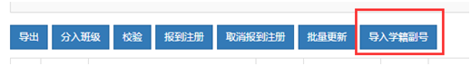
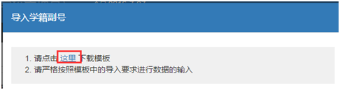

有历史新生获得学籍副号
功能描述
依据区县设置的“新生学籍副号生成规则”，如果您有权限，则可以在学生生成学籍前批量更新有历史新生的学籍副号，多次更新时系统以最后一次数据为准，已生成学籍的不可更新，如需变更请在【学籍信息管理-学生学籍信息管理】中发起关键信息变更。
操作步骤
第一步，进入新生管理->新生列表。
第二步，点击“导入学籍副号”。
第三步，下载学籍副号模版。
第四步，在模版中填写相关学籍信息，请严格按照模版中的导入要求填写信息。
第五步，上传文档。注意：文档大小不超过20M，文件类型为 xlsx。
您可以选择如下两种方式:
- 点击添加文件，选中您的文档点击上传
- 拖拽文件至图示空白区域
第六步，系统将自动为您检测您上传的文档是否符合要求，展示处理结果
- 若没有任何问题，导入学籍副号成功
- 若有问题，根据问题修改文档信息，重复如上步骤重新上传
第七步，导入成功。